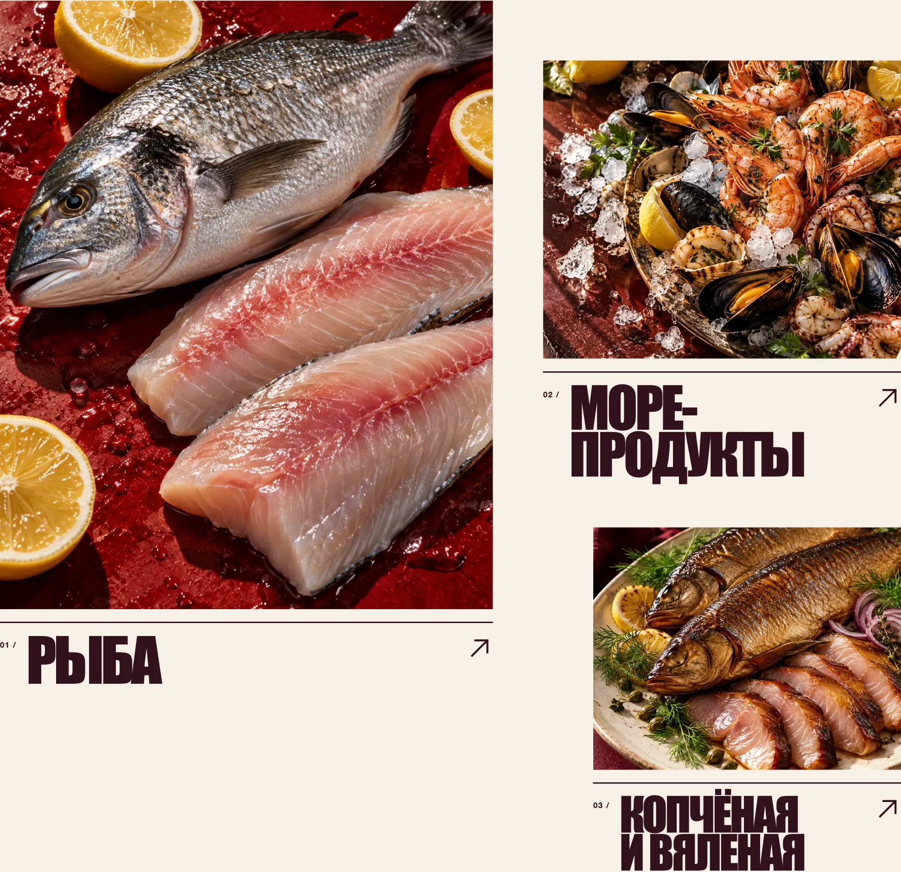
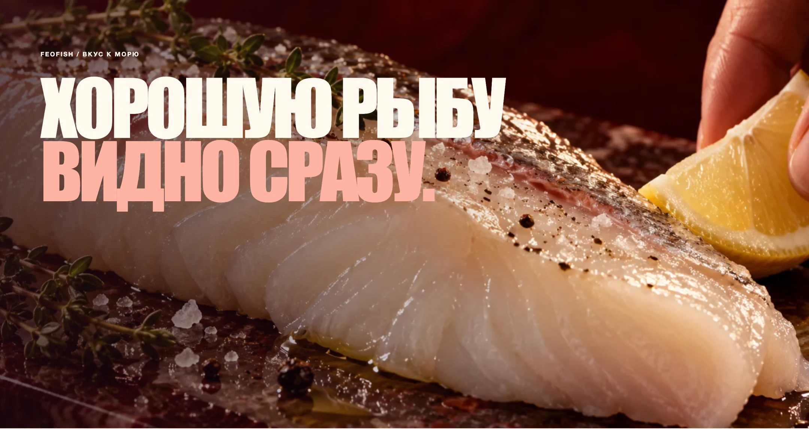
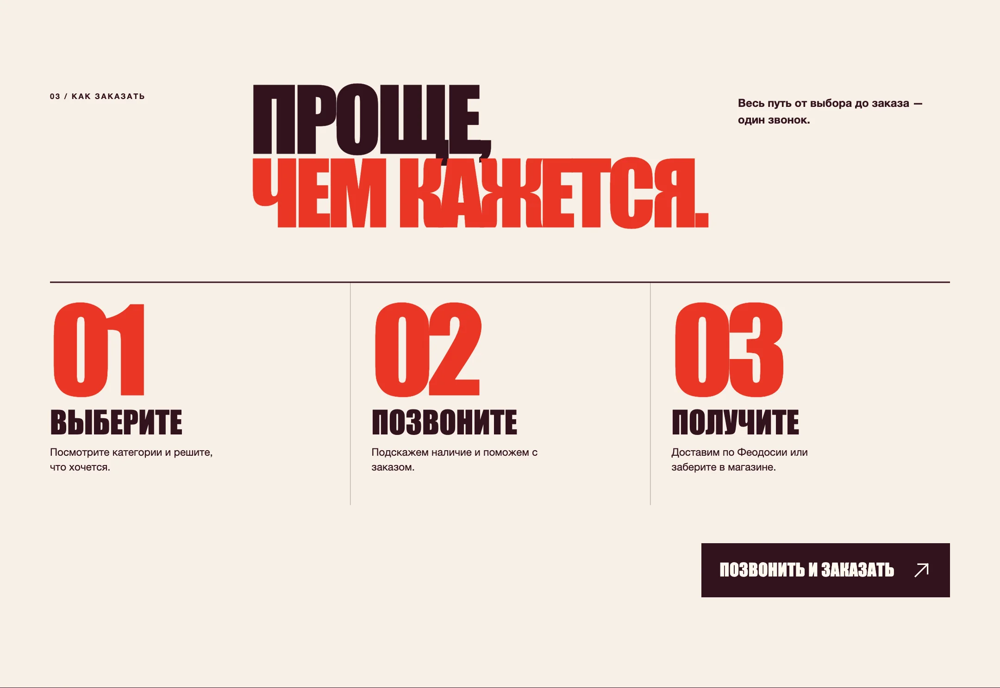
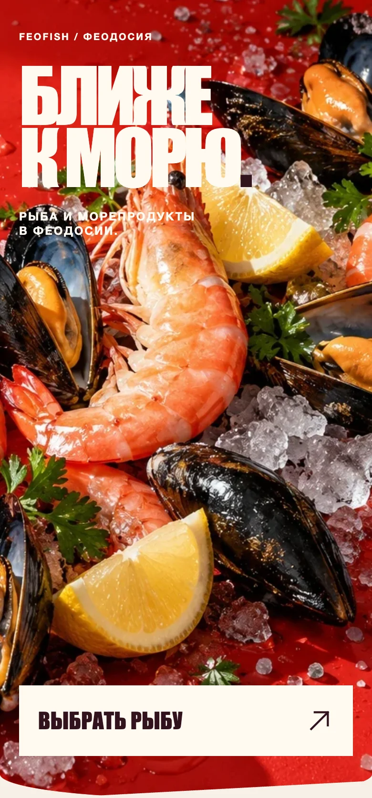
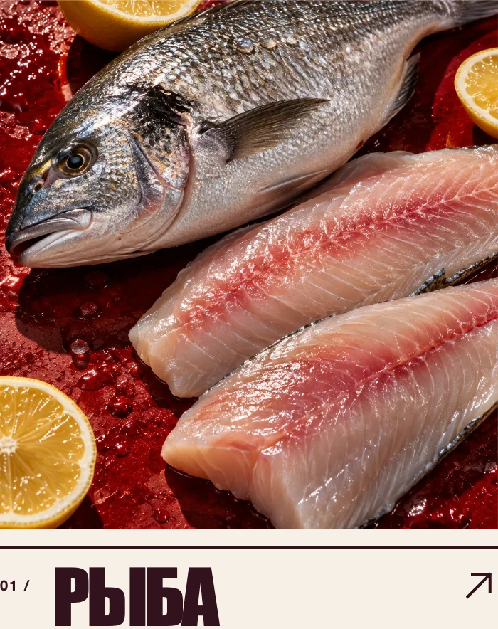
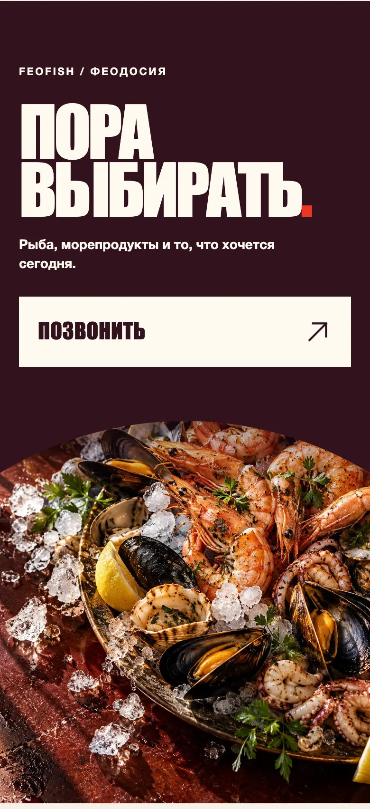
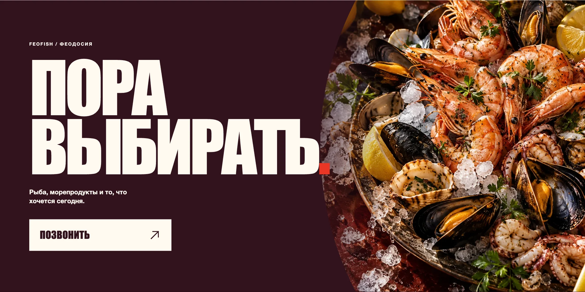

FEOFISH
Концепция сайта рыбного магазина: продукт в центре внимания, ясный путь к выбору и работающий фронтенд демо-версии.
- Формат
- Web Design · UI/UX
- Направления
- Art Direction · Frontend
- Статус
- CONCEPT / REDESIGN — не клиентская работа

Задача концепта
Переосмыслить цифровую подачу FeoFish: вывести продукт на первый план и сделать путь от знакомства с ассортиментом до действия более понятным. Это самостоятельный концепт редизайна, а не подтверждённая клиентская работа.
Визуальное направление
Крупная типографика и фотографии задают аппетитный масштаб. Тёплая светлая база даёт паузы между насыщенными красными и бордовыми блоками; асимметрия сохраняет ритм, не усложняя просмотр.
- Редакционная типографика
- Крупные продуктовые кадры
- Контраст светлого и бордового
- Управляемая асимметрия
Desktop experience
Реальные кадры опубликованной демо-версии: ассортимент, крупный визуальный акцент и сценарий заказа.



Mobile experience
На узком экране сохраняются крупный визуальный жест, смена масштаба и ясная иерархия действий.



Пора выбирать.

Кадры взяты из опубликованной демо-версии. Фотографии в самом концепте иллюстративные и не подтверждают реальный ассортимент магазина.
VIEW LIVE CONCEPT